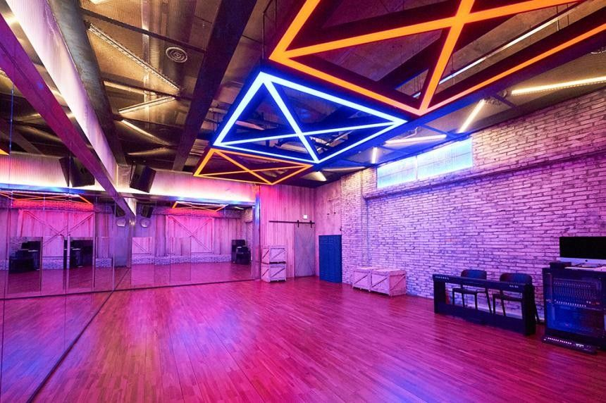

Academia de arte Dream
é uma academia decartes voltada para dança,teatro,desenhos e canto,levando de menores aprendiz até maiores.
- academia tem filiais em:
- Curitiba
- São Paulo
- Londrina
- Santos
- Rio de Janeiro
queira inscrever-se,procure sobre vagas em tal academia.
Cursos
- dança desenhos teatro canto
- balè basico basico
- K-pop medio medio
- Pole Dance avançado avançado
- Dança de rua
- Hip-Hop
Informações sobre inscrições
Preços
- Dança desenhos teatro canto
- R$ 150,00/mês R$ 100,00/mês R$ 120,00/mês R$ 160,00/mês
Descontos
primeiro mês é de graça!
proprietario: Vitor,Livia